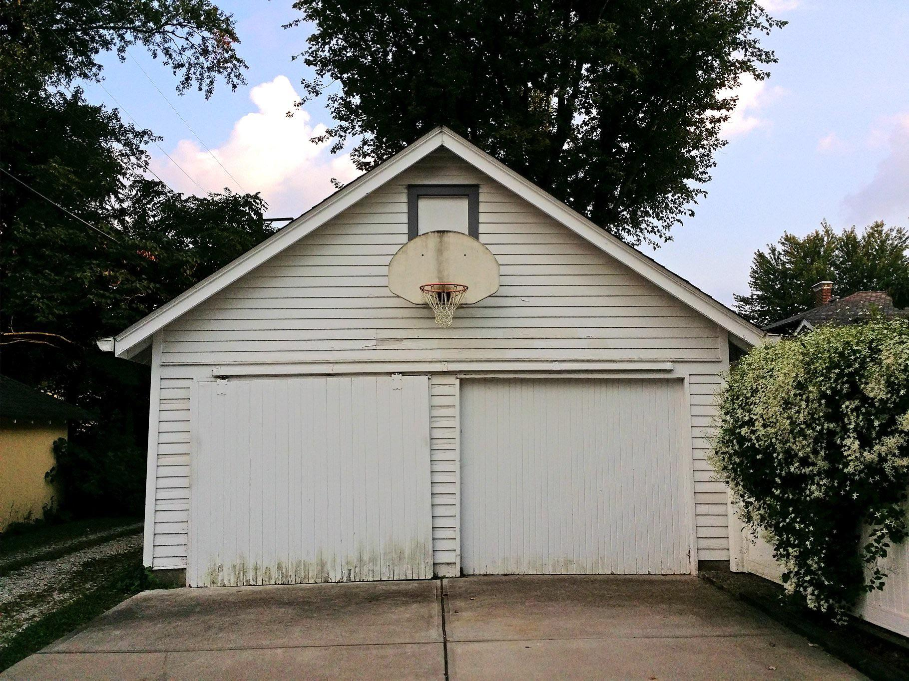

Birthday Boy
The Great Divorce
Jul 14, 2023
Someone at school told him that eight is when you have to stop saying half before your age. His mom likes to tell people that he was seven and a half for an entire year which always makes her laugh when she says it which in turn always makes him laugh because the way she says it is funny and also because Mom doesn’t like to laugh a lot anymore so it always feels more important when she does. That’s the only time he likes math, he doesn’t like numbers in school, or halves, and especially not fractions. Whenever someone, usually an adult asks him what his favorite subject is, he likes to say recess, and sometimes that makes people laugh just like Mom used to. Sometimes he’ll even just shoot by himself for the entire recess, no snack, no talking he’ll just keep “chucking up jump shots” as Mrs. Ruth likes to say. But he doesn’t have school today, today is the weekend, today is his birthday, and today he gets to dribble the ball and chuck up jump shots with no bell and no Jack Trevort to stop him and ask if he can shoot too. He doesn’t like Jack, he prefers to shoot alone when he can. Being alone makes it easier to think about things, to think about Space Jam, it makes it easier to imagine that he is like Mike, it makes it easier to forget that he is anywhere but here.
He leaves his hand up in the air after the ball leaves his hand letting the world see his form only letting it fall after he hears the rattle of the chain net he received for his birthday this morning. That song that says “jam” a lot at the begging of Space Jam plays non-diegetically in the background of his mind and even though he knows cars are going by only the music, the net, and the sound of air-filled leather bouncing up from hot concrete make their way into his conscious attention. His parents told him if he just practiced enough one day he could be like the players on tv, that he would grow to be tall like Dad who Mom now just calls Walt. He repeats what his dad told him as he goes through the shooting motion: bend the knees, keep the elbow tucked, and focus on controlling the ball with the left hand but make sure not to use the left hand to push it. Dad said if he does this enough he’ll be able to sink threes just like the people Dad watches with him in the Apartment. He knows that if he eats his vegetables and goes to bed on time that maybe even one day he could learn to dunk. His Dad can’t dunk or at least he can’t dunk now, he’s not sure if he ever could. He also likes to put salt in his shoes at night. His mom read him a book once about how Michael Jordan’s mom told him that if he put salt in his shoes he’d grow and Michael is really tall, even taller than Dad. So he always makes sure to put a lot of salt in his shoes before he goes to bed. But before dunking he has to get the whole lefty layup thing down which as of now is kind of a problem cause it’s really hard and a tricky thing to get good at. But he doesn’t have to worry about that today, he doesn’t have to do lefty stuff now, not on his birthday. Today he just shoots and recreates the opening of Space Jam in his head. He can already hear the crowds cheering in future arenas he will one day play in, he can see his parents clapping and maybe even his teachers because he is certain of his future, because, like all good boys, he believes in what adults tell him and they tell him he can do anything if he works hard at it and just believes. So he does, he just believes, shoots, dribbles, and remembers to believe.
He doesn’t remember when they got the divorce, he’s not even sure if he knows what the word means or if it’s permanent but a lot of the kids at school told him their parents are doing it too. Tommy told him that his mom said that he gets to have two Christmases now which sounds cool but all the kids agreed that when their parents told them about it they seemed really sad and upset over it like they got caught doing something bad and had to apologize and act real serious and explain how they knew it was wrong like what you have to do in school when Mrs. Adams catches you doing something. All he really knows for sure is that Mom gets Monday through Wednesday, Dad gets Thursday through Friday, and they alternate weekends, holidays, and birthdays. He also knows Dad doesn’t have a hoop at the new apartment so he has to walk to the park across the street which isn’t so bad but he prefers the front yard of his mom’s house, which only a few weeks ago used to be just his house. It won’t be for a while until he’ll even begin to understand the significance of that linguistic change. But this year Mom has him, which means he gets to shoot out front for as long as he wants, or at least until it gets dark outside. He tries not to think about it, it’s an adult thing and they told him not to worry and that it’s not his fault, plus he still has to practice. A coach at camp last summer told him that he missed his prom to practice, he doesn’t know what that means but it sounded important, probably more important than a birthday because it’s something adults have and he really did make a great big deal about telling us all about it. He doesn’t mind the practice though, or that he’s alone, or that mom had to work late tonight, he just likes the sound of his net. He hopes that she’ll let him stay up late, or that she’ll bring home pizza and maybe even sit and watch Space Jam with him later. He wonders if his Dad is going to call, Mom said he promised to call. He tells himself that if he gets good enough that one day they’ll both go to his games together when he’s older. He just needs to practice. His Mom likes to tell him how easy it is to be a kid, but maybe that’s because she never had to practice like he did, it’s pretty tough being a kid he thinks. It’s okay though, he’ll practice for her so she doesn’t have to, he’ll practice for both of them, he doesn’t mind.
He takes his place at the free-throw line. The knees bend down, right elbow tucks, the left hand gently guides but does not push the ball as the right hand extends up and out… he releases.